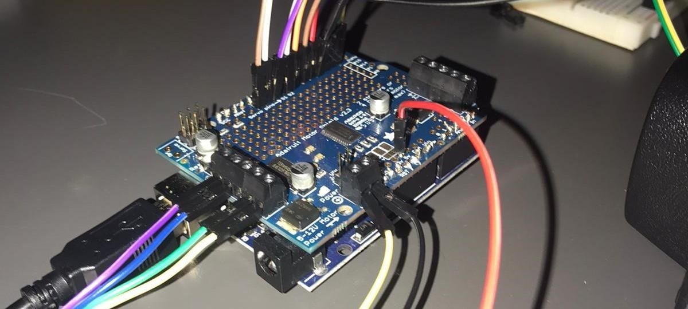
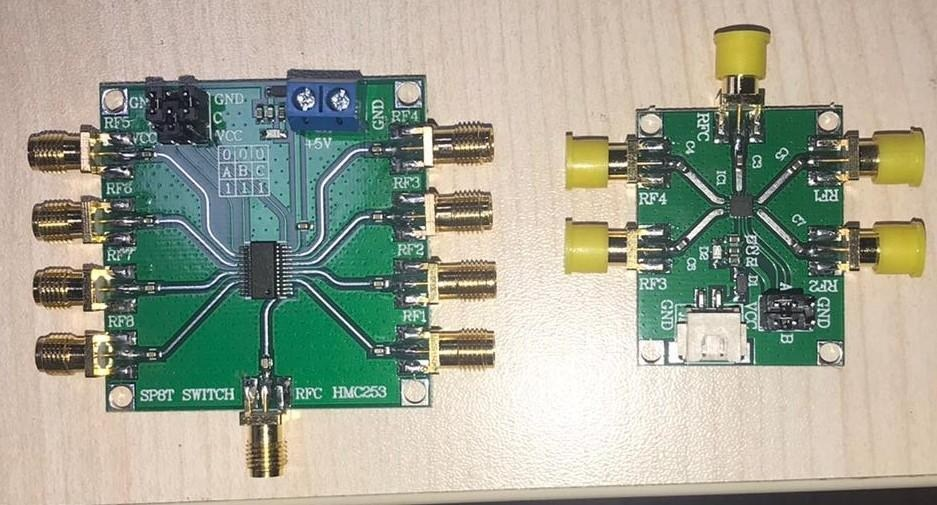
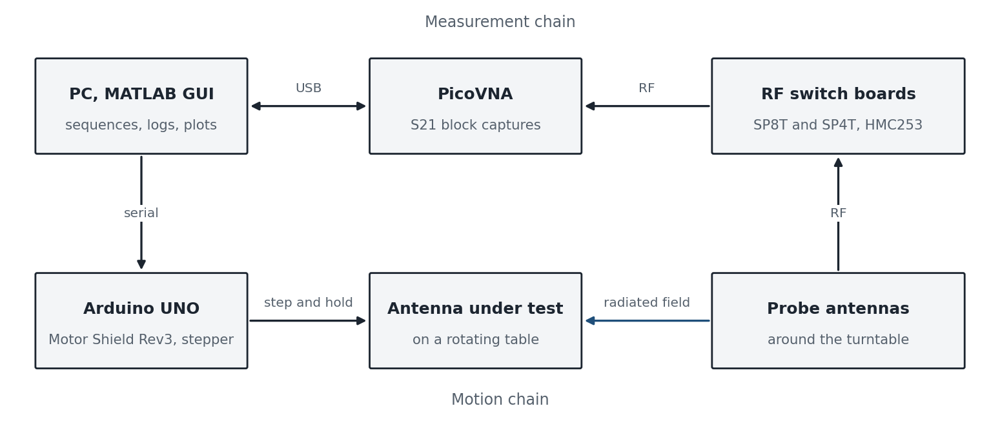
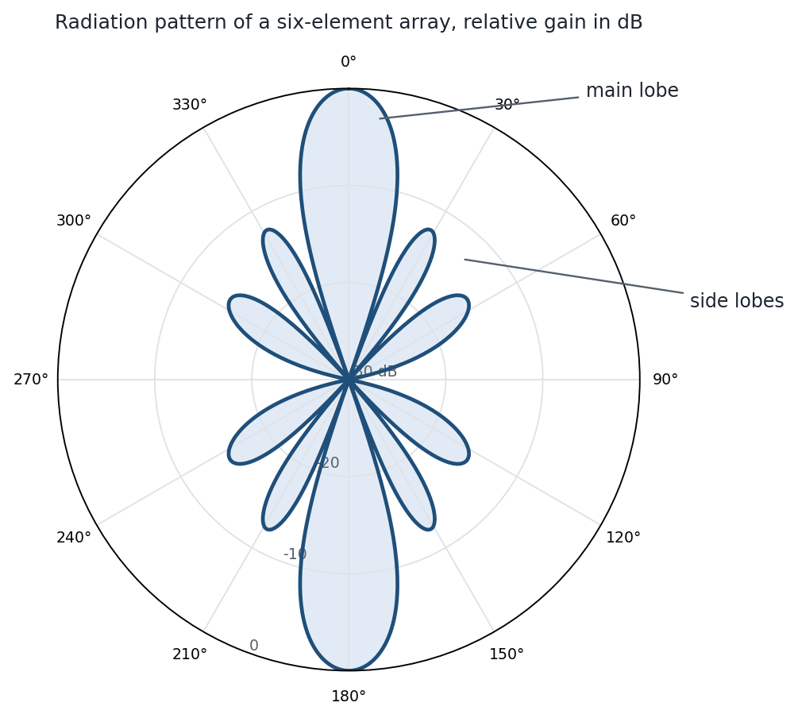
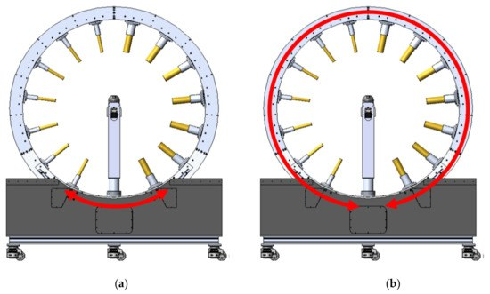
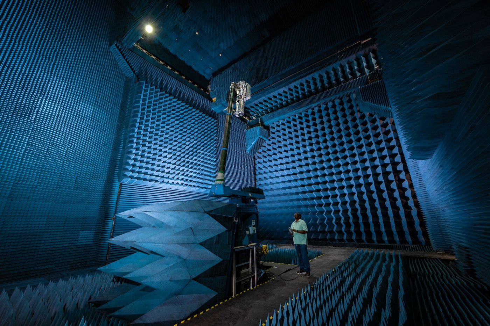

Automating the measurement of an antenna's radiation pattern
What a radiation pattern is
An antenna does not radiate equally in every direction. Its radiation pattern is the map of how much power it sends, or receives, as a function of angle: a main lobe in the direction it is meant to serve, side lobes that leak power elsewhere, nulls between them, and a beamwidth that says how tightly the main lobe is focused. Every antenna is designed around that map, and every design has to be measured, because manufacturing tolerances, the enclosure, the cable, and the ground plane all change the pattern the simulation promised. The measurement has to be made in the far field, far enough away that the wave front arriving at the probe is flat; the rule of thumb is a distance of 2D2/λ for an antenna of size D at wavelength λ, a few wavelengths for a small antenna and many meters for a large array. In practice that means an anechoic chamber lined with absorber, a probe antenna, and a way to sweep the angle between the probe and the antenna under test while a vector network analyzer records the transmission between them. The magnitude of that transmission, S21, plotted against angle is the pattern.
Why a cheaper system
Commercial multi-probe systems surround the antenna under test with an arc of probes and switch electronically between them, so a full pattern takes seconds. They cost on the order of $100K, with a chamber to go with them. A university lab, a small company, or a student team testing a 5G patch antenna or a drone's telemetry link needs the same measurement with far less money and bench space. Our target was a rig that one person could set up, that measured a complete two-dimensional pattern in under a minute, and that cost about $1400 in hardware, roughly 70 times less than the commercial systems it stands in for.
How the system works
The antenna under test sits on a turntable driven by a stepper motor, so that its angle is known exactly at every step. Probe antennas are connected through RF switch boards, an eight-way HMC253 SP8T and a four-way SP4T, so that a single PicoVNA port can be routed to whichever probe the measurement needs. MATLAB runs the whole sequence from a GUI: send the table to the next angle and hold it, select the probe, trigger the VNA to capture a block of S21 samples, tag the block with the table position, and move on. When the table has completed a revolution the stored blocks are the pattern, and a polar plot of them is the result.
My part
I owned the motion and the measurement chain. The stepper control ran on an Arduino UNO with the Motor Shield Rev3: step-and-hold positioning so that the table stops exactly on each measurement angle, speed control for the moves between them, and direction control for clockwise and counterclockwise sweeps, all on an 8-bit microcontroller with a few kilobytes of memory. I brought the RF switch boards into the same sequence, and I wrote the MATLAB side of the PicoVNA link: connecting to the instrument, running its calibration, triggering the S21 block captures, and synchronizing every capture with the table position through the GUI. The result was a full two-dimensional radiation pattern in under one minute.
Mathematical background
- Far-field condition, 2D2/λ, and why the pattern is measured at a distance
- Radiation pattern, directivity, half-power beamwidth, and side-lobe level
- Scattering parameters: S21 as a transmission measurement, and calibrating out the cables and the probe
- Angular sampling of a pattern from the stepper's step angle and the beamwidth to be resolved





